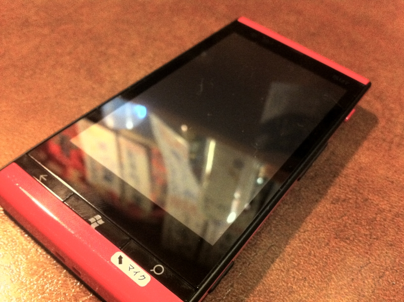
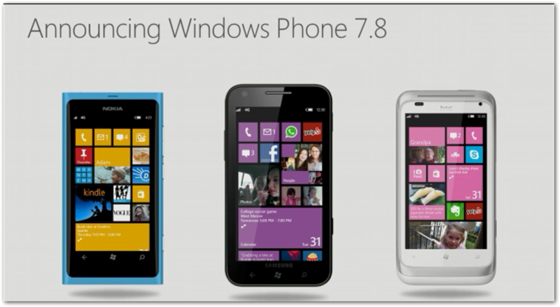

IS12T が退院。
公開日：
6月20日、Windows Phone Summit が開催。ライブ配信も - ななふぉ をみてました。まぁ、いろんな人がまとめてくれると思うので、これに関しては書かなくていいよね。そんなことより、奥さん。修理に出していた（近所の中華屋に潜入 - だるろぐ） IS12T が帰ってきたんですよ！ 今日はそれでちょっと気になったことを。

今回の破損はカメラボタンがとれただけ。でも、
- ケース一式交換
- 念のため基板交換
- 最新ソフトウェアへの更新
までしてくれた。修理代は5,050円だけれども、保険が効いたので支払額は0。ちょっと嬉しい。
でもよく考えれば、10日間使えないほうがよっぽど不便で嬉しくない。
Windows Phone は最新機である IS12T だけなので、代替機は古い Android 端末のみ*1。でも、OSが違えば使い方はぜんぜん違うし、購入したアプリも使えない。しかも型落ち機のくせに、万が一落としたら修理代がスゴい。というわけで、代替機の貸し出しは辞退せざるをえない。これは不便だよ。
試しに「カメラボタンを取り寄せてくれれば、自分で直しますよ」と言ってみたけど、案の定それは無理だと。ボタンが壊れただけなのに、10日間入院は大仰すぎる。
結局、ここらへん過剰品質なんだよね。今回の修理代 5,050円。その場で懐は痛まないけれど、保証サービスで徴収されたお金が充当されているわけだ。なんだかなぁ、と思わないでもない。ハード屋さんにとっては貴重な収入源なのだろうけど。

とにかく、IS12T は Windows Phone 7.8 端末としてこれからも活躍してもらわなきゃいけないので、大事にしようと思います。
*1:おそらくIS03だっけ？ あれ